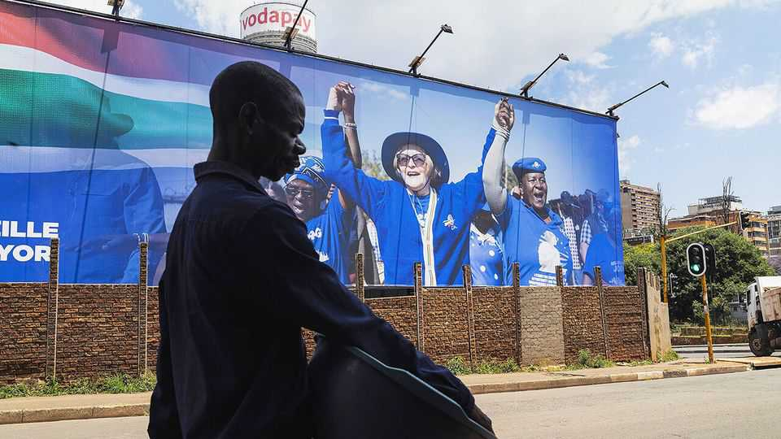

South Africans are giving up on Nelson Mandela’s party. Good
The decline of the African National Congress shows that democracy is working

Nov 12th 2026
“ThE IMPATIENCE and dissatisfaction among ordinary people are justified,” Nelson Mandela warned his party in 1999. At the time, the African National Congress (anc) utterly dominated South Africa. A generation on, after years of corruption, stagnation and collapsing public services, South Africans have run out of patience entirely. At local elections on November 4th they handed the ruling party its worst-ever result in a nationwide ballot. Though the ANC eked out 31% of all votes, more than any rival, that was less than half of what it recorded in 2004. In the country’s most dynamic places, it did especially badly. It is no longer the largest party in any big city, including Johannesburg, the commercial capital.
This shows that a young, fragile democracy is working. For decades the ANC could count on the votes of black South Africans, who are 80% of the population, because of its role in ending apartheid in 1994. In the early years it also delivered the goods: water, electricity, housing and a safety-net. But over time its performance has flagged. Voters increasingly see the anc as just another party. They punished it for water leaks, power cuts and sewage-ridden streets.
The Democratic Alliance (da), the second-largest party, is now only six percentage points behind the ANC, from almost 50 two decades ago. Previously derided as the “white party”, the da is now the largest party in five of the eight big cities—because it has a record of running cities competently. Depending on coalition negotiations, Helen Zille, a da veteran, could soon become Johannesburg’s first white post-apartheid mayor. You could hardly ask for a more encouraging sign that voters are moving on from racial politics.
Yet there is much to worry about, too. Most South Africans are disillusioned with democracy. Only 35% of possible voters bothered to cast a ballot on November 4th. More than a fifth of black voters opted for black-nationalist parties with ideas that are more Mugabe than Mandela. These include uMkhonto weSizwe (mk), which will probably run Durban, the city with the busiest port in sub-Saharan Africa, and the Economic Freedom Fighters (eff). Dangerous grassroots movements, from anti-migrant vigilantes to white nationalists, pose a threat, too.
To his credit Cyril Ramaphosa, South Africa’s president since 2018, acknowledges that his party is losing support. Other leaders, in Africa and elsewhere, instead rig elections and violently cling to power. Since 2024 at the national level he has led a Government of National Unity, in effect an anc-da coalition, that has brought some political stability and sensible reforms. But his tenure is entering its twilight. He will be replaced as party leader in 2027 and must leave the presidency no later than in 2029. He still has much to do to secure his desired legacy: as the disciple of Mandela who shored up South Africa’s graft-eroded institutions, reformed the economy and thwarted ruinous populism.
An urgent priority for the country is to run its cities better. That requires more local power-sharing among parties, just as they have learned to do nationally. The anc will have to get used to being, at times, a junior coalition partner. Some in the party would prefer to unite the so-called “black parties”, cutting deals with mk and the eff. But that would lead to much worse and more corrupt governance, which voters would soon notice. Smaller parties, like Actionsa, which won 16% of the vote in Johannesburg, also face a test of their seriousness.
A political realignment is under way that brings some risks for the continent’s largest economy. But mostly the change is welcome: voters are rewarding those who govern better, and punishing those who don’t, just as the architects of the constitution hoped they would. When the anc failed to deliver a better life for all, voters looked for an alternative. Mandela would have understood. ■